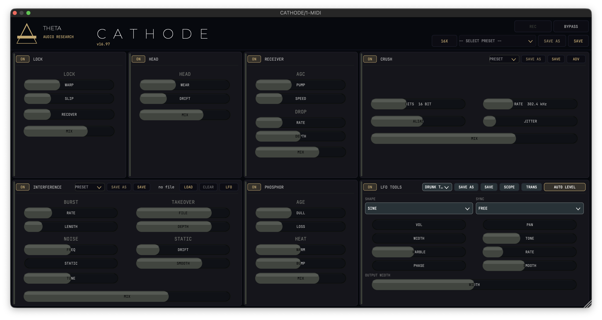
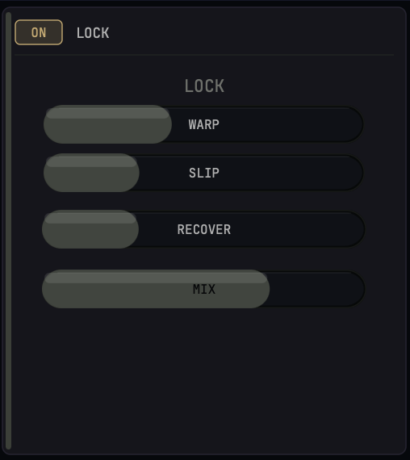
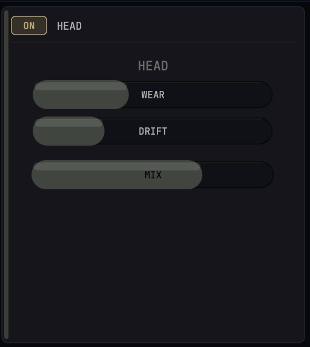
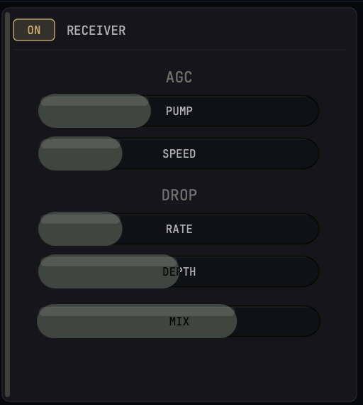
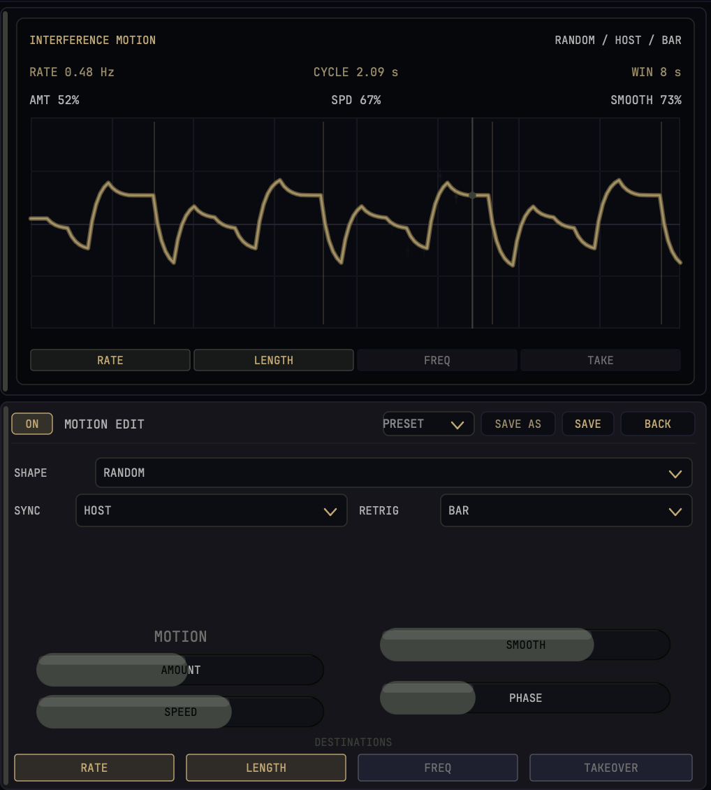
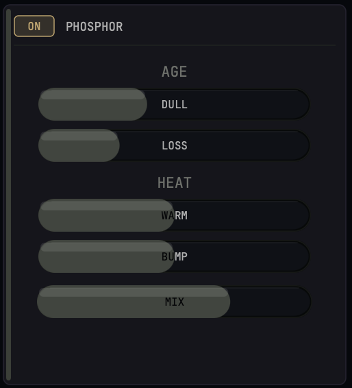
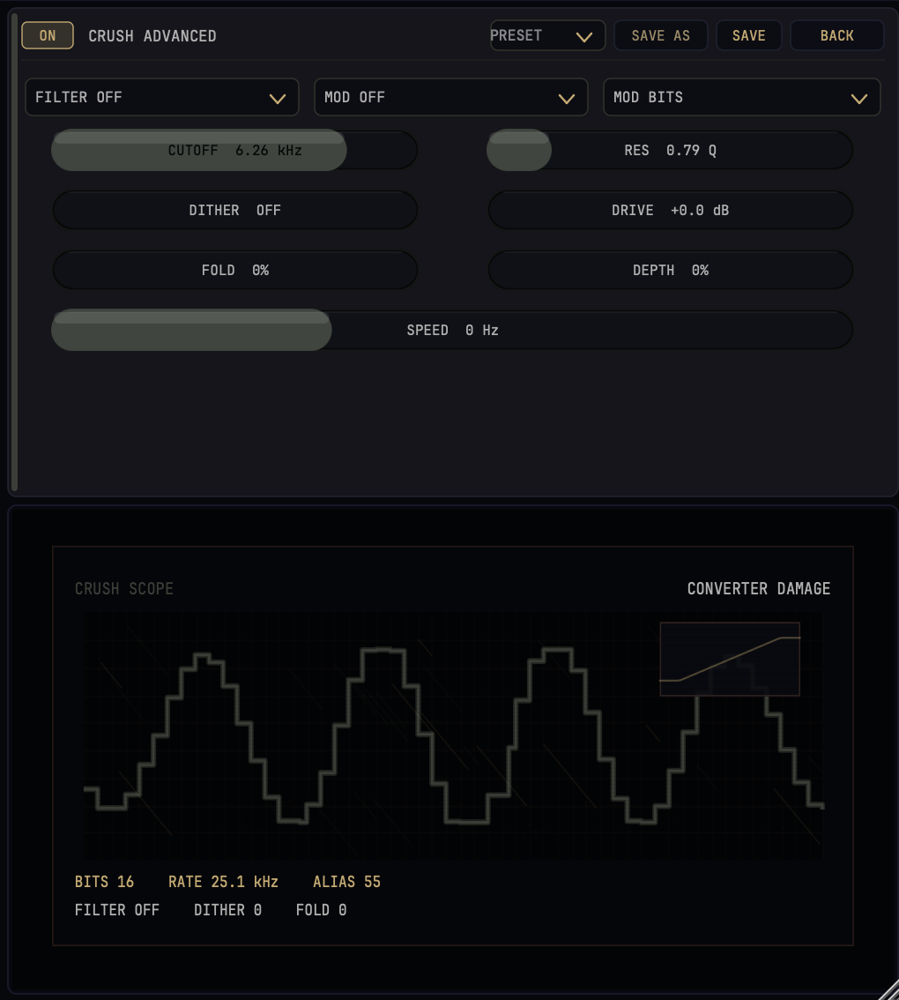
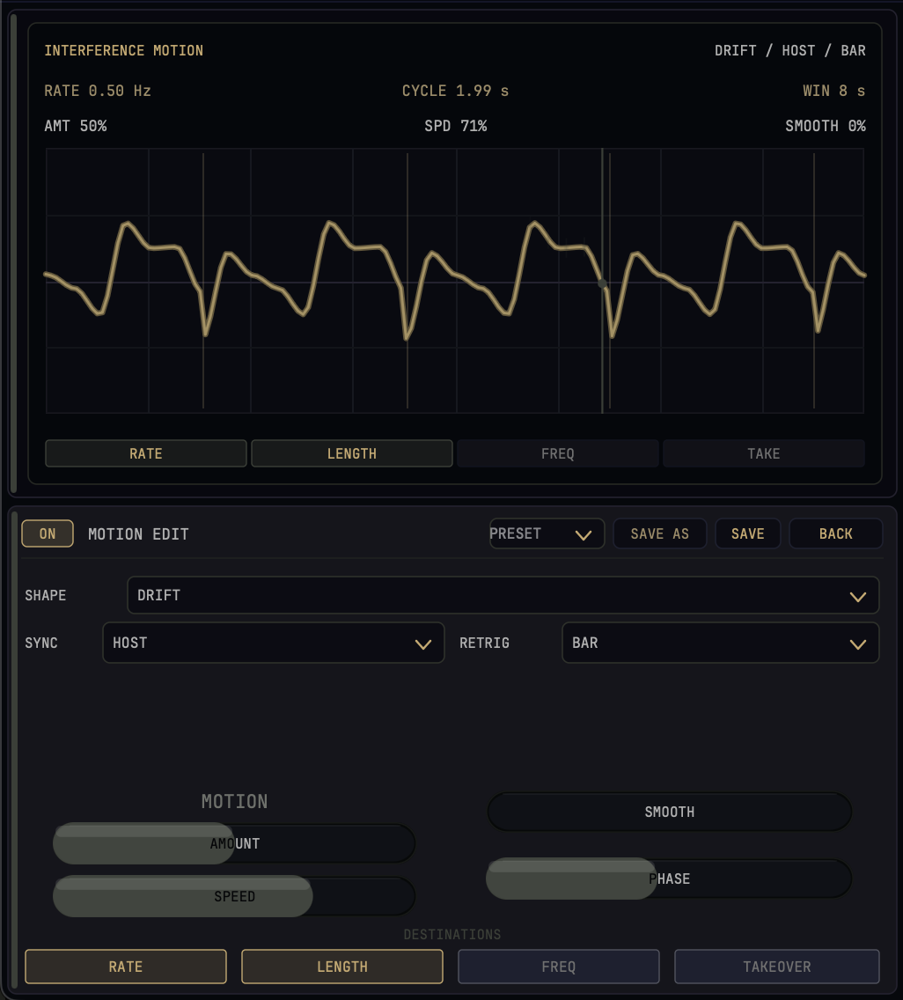
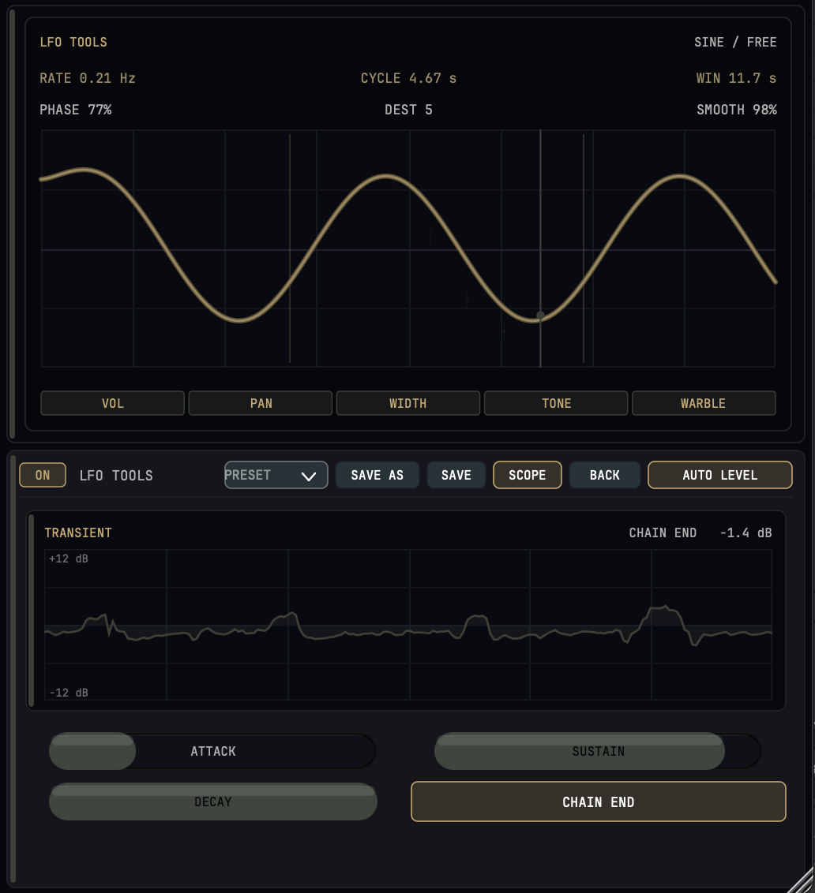

Run anything through a signal chain that's falling apart on purpose. CATHODE is seven stages of analog-to-digital rot — worn tape, drifting transport, a panicking receiver, RF interference, phosphor burn, converter damage — with a full modulation-and-transient toolkit bolted to the end so you can make the decay move. Subtle enough to age a vocal, violent enough to liquefy a drum loop.
Authorization includes VST3, AU, and AAX formats. Full-plugin configurations plus granular independent stage preset mapping.
INITIALIZE_ACQUISITION // $129.00THE_IDEA
Most "lo-fi" plugins give you one flavor of broken. CATHODE gives you the whole broadcast path, stage by stage, the way a signal actually degrades on its way from a tape machine to a CRT to a cheap converter. Each module models a different failure, and because they're chained, the damage compounds — dropouts feed into interference, interference feeds into bitcrushing, and the LFO TOOLS section can sweep, wobble, and re-shape whatever comes out.
Every module is true bypass-by-crossfade (the DSP always runs; bypass is a 5 ms wet/dry fade, so toggling never clicks), and every module has its own MIX so you can dial the exact amount of ruin.
Signal path: HEAD → LOCK → RECEIVER → PHOSPHOR → INTERFERENCE → CRUSH → LFO TOOLS → output. (You can leave any stage off; the order is fixed and modelled to compound naturally.)
THE_MODULES

The tape isn't tracking. LOCK destabilises pitch and timing the way a transport losing servo lock does — slow wow, sudden slips, and a recovery that chases the speed back into place.
- · WARP Depth of the pitch/time instability. Low is a gentle drift; high is seasick.
- · SLIP Sudden sync slips on top of the warp — the moment the tape lets go.
- · RECOVER How aggressively it re-locks after a slip. Fast snaps back; slow leaves the pitch sagging.
- · MIX Blend against dry texturing paths.

A playback head that's seen too many passes. HEAD rolls off the top end and lets the level and tone drift the way a dirty, magnetised head does.
- · WEAR Head-wear amount: progressive high-frequency dulling and a softer, rounder top.
- · DRIFT Slow tonal/level drift, like azimuth wandering over a long take.
- · MIX Blend against clean internal lines.

The broadcast stage. A receiver fighting to hold onto a weak signal: automatic gain control that pumps and breathes, plus intermittent dropouts when the signal cuts out.
- · AGC › PUMP How hard the automatic gain control rides the level — the classic broadcast "breathing."
- · AGC › SPEED How fast the AGC reacts. Slow is a gentle swell; fast is audible pumping.
- · DROP › RATE How often the signal drops out.
- · DROP › DEPTH How far it drops — a dip, or a full momentary cut.
- · MIX Blend against incoming program source parameters.

The most aggressive module, and the most fun. Bursts of RF interference, a bed of drifting static, and — the centrepiece — TAKEOVER, where a loaded audio file bleeds in and momentarily hijacks the signal, like a second station fighting onto the same frequency. It has its own built-in LFO to modulate the whole thing rhythmically.
- · BURST › RATE / LENGTH Frequency and duration of interference bursts.
- · TAKEOVER › FILE / DEPTH Load any audio file with LOAD; FILE sets its level, DEPTH sets how hard it overtakes the host signal. (CLEAR removes it.)
- · NOISE › FREQ / STATIC / TUNE The character, level, and pitch of the noise bed.
- · STATIC › DRIFT / SMOOTH Movement and smoothing of the static over time.
- · LFO Opens INTERFERENCE's own modulator, routable to rate, length, freq, and takeover for evolving, rhythmic interference.
- · MIX Master module dry/wet summing boundary.

The display end of the chain. Phosphor that's been dulled by years of the same image, cable loss bleeding off the highs, and a touch of mains hum sitting under everything.
- · AGE › DULL Phosphor dulling: the slow loss of brightness and high-end sparkle.
- · AGE › LOSS Cable loss: high-frequency roll-off and softening, as if down a long, cheap run.
- · HEAT › WARM Phosphor warmth — a glowing low-mid lift.
- · HEAT › BUMP A low-frequency bump for weight and body.
- · MIX Frame blend parameters.

Where the analog chain hits a failing digital converter. Bit reduction, sample-rate crushing, aliasing, clock jitter, drive and wavefolding — plus a dedicated filter and an internal modulator. CRUSH has an ADVANCED panel with a live CRUSH SCOPE that draws the damaged waveform as crisp vectors so you can see exactly what the converter is doing to your signal.
- · BITS / RATE Bit-depth reduction and sample-rate decimation thresholds.
- · ALIAS / JITTER Aliasing signatures combined with raw clock timing instability grit.
- · DRIVE / FOLD / DITHER Clipping threshold pushes, wavefolding mix balances, and noise metrics.
- · Filter / Mod Mechanics Variable cutoff parameters routed to assignable modulation curves.
- · MIX Blend against dry.

The final stage, and the deepest. LFO TOOLS is two tools in one: a fully-featured LFO that can modulate five aspects of the output, and a three-band transient designer with live metering. It's where you turn static damage into something that breathes, pulses, and hits.
A single LFO with nine shapes — sine, triangle, saw, square, random sample-and-hold, ramp-down, drift, exponential, and stairs — that you can run free or sync to host tempo.
- · SHAPE / SYNC / RATE Pick the waveform, free-vs-host timing structures, and divisions.
- · PHASE / SMOOTH Offset the LFO's start point and smooth its motion from instant to heavily slewed.
- · Five Destinations Depth is the switch. VOL (tremolo), PAN (auto-pan), WIDTH (field breathing), TONE (swept ±15 dB tilt EQ shelf), and WARBLE (pitch tape wow).

Hit the TRANS button and LFO TOOLS becomes a three-band transient shaper with a live "gain applied over time" meter across the top — you watch exactly how much the processor is boosting or cutting, moment to moment, scrolling left to right with now at the right edge.
- · ATTACK / SUSTAIN / DECAY Bipolar parameters governing transient onset, frame body, and tail tighteners.
- · Routing toggle Place the transient shaping either at the LFO INPUT (feeding the modulation) or at the CHAIN END (the very last thing before output).
- · AUTO LEVEL A soft output ceiling that catches the level when heavy modulation or transient boosting pushes things hot.
WORKFLOW_INTELLIGENCE
- Two-Tier Presets Save full system setups or map modular patch properties to individual slots.
- Vector Scopes Real-time high-DPI vector rendering maps parameters flawlessly without blurry upscaling.
- DSP Architecture Compounding signal chains run loops continuously to avoid phase crossfade clicks.
- Oversampling HQ interpolation engine captures absolute digital grit while shielding out harsh aliasing.
TECHNICAL_SPECIFICATIONS
- Formats VST3, AU, AAX [Native plug-in frameworks]
- Platform Support macOS [Apple Silicon & Intel Native Core Matrices]
- Interface Properties Fixed 1280 × 640 footprint featuring crisp high-DPI vector paths.
- Engineering Group THETA Audio Research // 2026 Release Framework